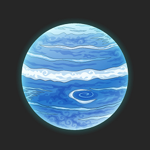

<< Назад |
- | На главную |
- | |
| - | ||||
|  | Размер (радиус) | 24 622 км | ||
| Температура | Средняя температура равна –220° C | |||
| Масса | 1,024E26 кг | |||
| Ускорение свободного падения | 11,15 м/с² | |||
| Возраст | 4,503E9 лет | |||
| Растояние до Земли | Расстояние от Меркурия до Земли меняется от 4,3 до 4,6 миллиарда км. | |||
| Растояние до Солнца | 4,55 млрд км | |||
| Плотность | 1,64 г/см³ | |||
| Продолжительность суток | 0 д 16 ч 6 мин | |||